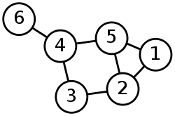

Graph and Trees in rust
Table of Contents
Interviews are hard, and quirks for rust do make them harder. Especially when it comes to data structures like graphs and trees. While in other languages you can quickly code up a pointer based solution due to most languages not having a borrow checker. However, the borrow checker is a bane for writing these data structures in rust, especially in a time constrained setting such as that of a coding interview. This post intends to make that a little easier!
A shared reference with interior mutability: NodeRef
If you have struggled with rust’s borrow checker enough, you know it’s hard for rust to be conviced of the following situation:
I have two entities (vertices) $A$ and $B$ which both want to point to (hence, hold a shared reference to) a third entity $C$. $A$, $B$ and $C$ live as long as each other. And maybe sometimes $C$ wants to be mutated as well.
If you know rust, you know this is stupidly hard with bare references. Not just that you start dealing with lifetimes due to “$A$, $B$, $C$ live as long as each other”, but mutation when shared references are held is a problem on top (which sometimes we do want to have access to).
What is a NodeRef
A NodeRef is simply a type alias to the following:
use std::Rc;
use std::cell::RefCell;
type NodeRef = Rc<RefCell<Node>>
where Node is some struct which holds the information relevant to a specific vertex in a graph or a tree.
To understand what we are trying to do here, try refering to these documentations:
std::Rc is a reference-counting single-threaded immuatable smart pointer which holds the value it has internally till the last reference to that data goes out of scope. What’s important is to understand it is single-threaded which is not a proablem for most of the applications under the pretext of interviews, where we have to code fast.
std::cell::RefCell is needed because we need interior-mutability: the ability to modify Node even when we do not have the sole mutable access of the underlying at the compile time. Do note that RefCell does not allow you to break the borrow-checking rules, it just defers that to the runtime where we can do .borrow() or .borrow_mut() and ask for the relevant style of references.
Example implementation: Graph Breadth-First-Search
Let’s try implementing Graph Breadth First Search on this seemingly innocent undirected graph:

We will use this simple test:
#[test]
fn basic_graph_bfs() {
// Create a new `Graph` object, needed to ensure every node
// has a unique id that doesn't clash with other nodes
let mut graph = Graph::new();
const NODE_COUNT: usize = 6;
// Create all nodes
let nodes = (1..(NODE_COUNT+1))
.map(|vertex_id| graph.new_node(vertex_id))
.collect::<Vec<NodeRef>>();
// Connect them
let connections = vec![
(1usize, vec![2usize, 5]),
(2, vec![5, 3]),
(3, vec![2, 4]),
(4, vec![3, 5, 6]),
(5, vec![1, 4]),
(6, vec![4]),
];
for (vtx_id, neighbors) in connections {
for neighbor_id in neighbors {
nodes[vtx_id - 1].borrow_mut().attach(nodes[neighbor_id - 1].clone());
}
}
assert_eq!(graph.bfs(), vec![1, 2, 5, 3, 4, 6]);
}
let’s try setting up the following two structs Graph and Node:
use std::{
cell::RefCell,
rc::Rc,
};
type NodeRef = Rc<RefCell<Node>>;
#[derive(Default)]
struct Graph {
nodes: Vec<NodeRef>,
unique_id_latest: usize,
}
struct Node {
unique_id: usize,
value: usize,
edges: Vec<NodeRef>,
}
Simple impl blocks that are obvious to them:
impl Graph {
pub fn new() -> Self {
Self {
..Default::default()
}
}
pub fn new_node(&mut self, value: usize) -> NodeRef {
todo!()
}
pub fn bfs(&self) -> Vec<usize> {
todo!()
}
}
struct Node {
unique_id: usize,
value: usize,
edges: Vec<NodeRef>,
}
impl Node {
pub fn attach(&mut self, other: NodeRef) {
self.edges.push(other);
}
pub fn update(&mut self, value: usize) {
self.value = value;
}
}
Why do we need unique_id in Node?
RefCell does not implement the trait std::hash::Hash. You can read more about this trait here: https://doc.rust-lang.org/stable/std/hash/trait.Hash.html. The relevance of Hash here is in the fact that we need it to have an instance of HashSet of HashMap. You need these to among other things create a visited hashmap - the list of nodes that you have already accessed before.
Aside: In other setting, people also use the “visited array” where each Node is supposed to be represented by an index in a bit array which can be queried. The problem with that is if you have create a graph of 1 million nodes, then further delete all but 10 of the nodes (and relevant connections), that deletion does not help you in making the bit array smaller as the size of such bit array would depend on the largest Node Identifier.
But why does RefCell not implement std::hash::Hash? The simplest reason is if some type T implements std::hash::Hash, it is often used in instances where the resultant hash value is assumed to be constant over a program’s run. For example, if we create HashSet<T>, the way we check if T exists via hashset.contains(t:T) is by hashing t. Now assume if between insertion and query, the value held inside T changes. That would mess up this HashSet system. Hence as a general rule, types that have interior mutability do not implement std::hash::Hash.
Quick question to the reader: Can you implement
std::hash::HashforRefCell<T>yourself (without forking rust-std)?
unique_id is the identifier we put within each Node so that it is unique w.r.t. all the other node. For this reason, you cannot construct a Node yourself unless you go via graph.new_node() which ensures uniqueness of ID.
Let’s implement the remaining methods
The remaining methods are pretty self-explanatory after we understand the rationale behind our setup. The
following is how the rest of Graph impl looks:
impl Graph {
pub fn new() -> Self {
Self {
..Default::default()
}
}
pub fn new_node(&mut self, value: usize) -> NodeRef {
let node = Node {
unique_id: self.unique_id_latest,
value: value,
edges: vec![],
};
self.unique_id_latest += 1;
let node_ref = Rc::new(RefCell::new(node));
self.nodes.push(node_ref.clone());
node_ref
}
pub fn bfs(&self) -> Vec<usize> {
let mut visited: HashSet<usize> = HashSet::with_capacity(self.nodes.len());
let mut bfs = Vec::with_capacity(self.nodes.len());
let mut queue = VecDeque::with_capacity(self.nodes.len());
if self.nodes.len() < 1 {
return bfs;
}
queue.push_back(self.nodes[0].clone());
visited.insert(self.nodes[0].borrow().unique_id);
while !queue.is_empty() {
let node = queue.pop_front().unwrap();
bfs.push(node.borrow().value);
node.borrow()
.edges
.iter()
.for_each(|val| {
let unique_id = val.borrow().unique_id;
if !visited.contains(&unique_id) {
visited.insert(unique_id);
queue.push_back(val.clone());
}
});
}
bfs
}
}